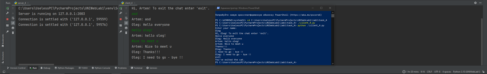

Задание 4
Реализовать многопользовательский чат. Для применения с TCP необходимо запускать клиентские подключения И прием и отправку сообщений всем юзерам на сервере в потоках. Не забудьте сохранять юзеров, чтобы потом отправлять им сообщения.
Выполнение
Реализация сервера
import socket
import threading
clients = {}
HOST = '127.0.0.1'
PORT = 2003
def handle_client(client_socket, client_address):
try:
client_socket.send("Enter your name: ".encode('utf-8'))
client_name = client_socket.recv(1024).decode('utf-8')
welcome_message = f"Hi, {client_name}! To exit the chat enter 'exit'."
client_socket.send(welcome_message.encode('utf-8'))
clients[client_name] = client_socket
while True:
message = client_socket.recv(1024).decode('utf-8')
if message == 'exit':
client_socket.send('exit'.encode('utf-8'))
del clients[client_name]
client_socket.close()
break
broadcast_message = f"{client_name}: {message}"
# Рассылка сообщения всем клиентам
for client in clients.values():
client.send(broadcast_message.encode('utf-8'))
except Exception as e:
print(f"Error: {str(e)}")
client_socket.close()
def main():
server_socket = socket.socket(socket.AF_INET, socket.SOCK_STREAM)
server_socket.bind((HOST, PORT))
server_socket.listen(5)
print(f"Server is running on {HOST}:{PORT}")
while True:
client_socket, client_address = server_socket.accept()
print(f"Connection is settled with {client_address}")
client_thread = threading.Thread(target=handle_client, args=(client_socket, client_address))
client_thread.start()
if __name__ == "__main__":
main()
Реализация клиента
import socket
import threading
HOST = '127.0.0.1'
PORT = 2003
def receive_messages(client_socket):
while True:
message = client_socket.recv(1024).decode('utf-8')
if message == 'exit':
print("You've exited the cat.")
break
print(message)
def main():
client_socket = socket.socket(socket.AF_INET, socket.SOCK_STREAM)
client_socket.connect((HOST, PORT))
receive_thread = threading.Thread(target=receive_messages, args=(client_socket,))
receive_thread.start()
while True:
message = input()
client_socket.send(message.encode('utf-8'))
if message == 'exit':
break
if __name__ == "__main__":
main()
Пример работы
